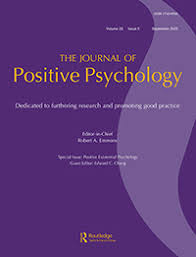

Scott’s Google Scholar 📚
🧠Contributions to Science
Dr. Donaldson’s research advances the science and practice of evaluation, measurement, and health & well-being. His work integrates rigorous methods, such as scale development and meta-analysis, and leverages digital data sources, to inform public & organizational policy, programs, and improve human well-being.
🧪 Evaluation
Dr. Donaldson is a Co-Investigator on a multi-year grant funded by the California Department of Public Health (CDPH), focused on monitoring and evaluating digital tobacco marketing to inform enforcement and public health messaging. He is also a co-investigator at the Center for Rapid Surveillance of Tobacco (CRST), a national initiative tracking marketplace trends across digital channels. These efforts provide actionable evidence for policy, prevention, and regulatory response at both state and national levels.
Representative Publications:
Donaldson, S. I., Beard, T. A., Colonna, R., et al. (2023).
Online purchase attempts of flavored e-cigarettes to minors in California before and after Senate Bill 793.
JAMA Network OpenDonaldson, S. I., Beard, T., Dormanesh, A., et al. (2024).
Monitoring website marketing among leading e-cigarette brands and vendors in California: Content analysis.
Tobacco ControlDonaldson, S. I., Dormanesh, A., Majmunder, A., et al. (2024).
Examining the peer-reviewed literature on tobacco-related social media data: Scoping review.
Nicotine & Tobacco Research
🧬 Measurement
A specialist in psychometrics, Dr. Donaldson designs and validates tools to assess behavioral and public health constructs. He is the top-cited author in the International Journal of Applied Positive Psychology, where his meta-analysis is the journal’s most cited article. His dissertation research on the Positive Functioning at Work Scale received the Top Dissertation Award [Honorable Mention] from the International Positive Psychology Association (IPPA).
Representative Publications:
 Donaldson, S. I., Lee, J. Y., Donaldson, S. I. (2020).
Donaldson, S. I., Lee, J. Y., Donaldson, S. I. (2020).
Evaluating positive psychology interventions at work: A systematic review and meta-analysis.
International Journal of Applied Positive Psychology Donaldson, S. I., Dormanesh, A., Perez, C., et al. (2022).
Donaldson, S. I., Dormanesh, A., Perez, C., et al. (2022).
Association between exposure to tobacco content on social media and tobacco use: A systematic review and meta-analysis.
JAMA PediatricsDonaldson, S. I., Donaldson, S. I. (2020).
The Positive Functioning at Work Scale: Psychometric assessment, validation, and measurement invariance.
Journal of Well-Being Assessment
🌱 Health & Well-Being
Dr. Donaldson is the co-creator of the PERMA+4 framework, a comprehensive model of workplace well-being that integrates positive psychology with occupational health. His research uses advanced quantitative methods to examine how PERMA+4 predicts employee positive functioning and performance.
Representative Publications:
Donaldson, S. I., Van Zyl, L. E., Donaldson, S. I. (2021).
PERMA+4: A framework for work-related wellbeing, performance and positive organizational psychology 2.0.
Frontiers in Psychology Donaldson, S. I., Suchta, M., Donaldson, S. I. (2024).
PERMA+4 well-being predicts the future: Longitudinal evidence for employee positive functioning and performance.
The Journal of Positive Psychology- Donaldson, S. I., Donaldson, S. I., McQuaid, M., Kern, M. L. (2024).
The PERMA+4 short scale: A cross-cultural empirical validation using item response theory.
International Journal of Applied Positive Psychology